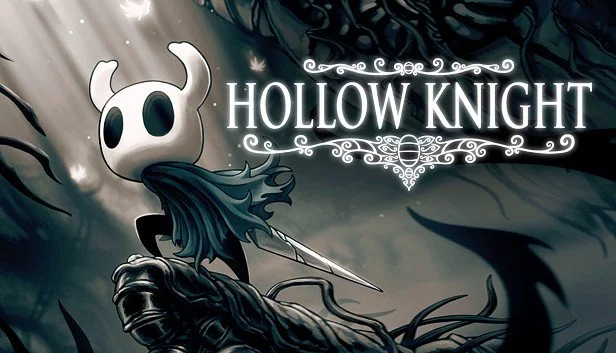
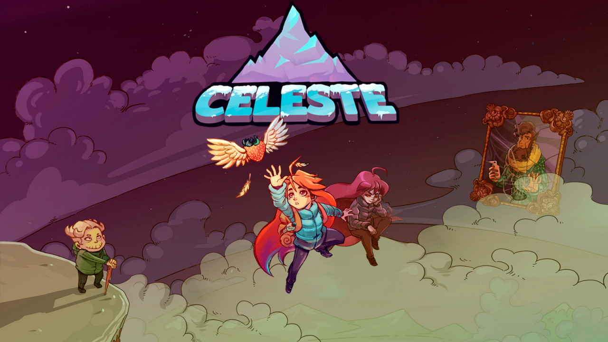
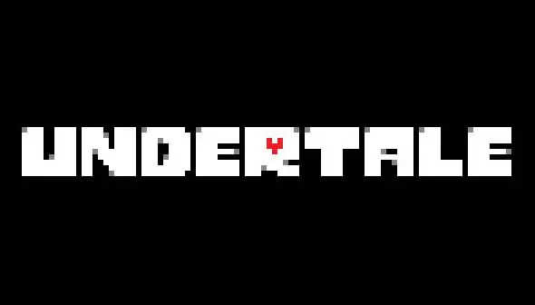

Top 5 Juegos Indie de Todos los Tiempos
Has click en las img para obtener mas informacion:
🥇 Top 1: Hollow Knight

Está en el puesto número uno porque es el juego más completo del top. No solo destaca en un aspecto, sino en todos: exploración, combate, arte, música y duración. Además, su nivel de calidad compite con juegos AAA, lo que lo convierte en el referente más sólido del mundo indie.
🥈 Top 2: Celeste

Ocupa el segundo lugar porque su jugabilidad es prácticamente perfecta dentro de su género, pero es más corto y menos amplio que el primer puesto. Aun así, su historia y precisión lo convierten en uno de los mejores juegos indie jamás hechos.
🥉 Top 3: Undertale

Está en tercer lugar porque su mayor fuerza es la innovación y el impacto cultural. Aunque no tiene la profundidad mecánica de los primeros dos, cambió la forma de ver los RPG y dejó una huella enorme en la industria.
🎮 Top 4: Stardew Valley

Se posiciona cuarto porque es increíblemente exitoso y completo, pero su enfoque es más relajado y menos desafiante que los anteriores. Es uno de los mejores en su tipo, pero no busca el mismo nivel de reto o impacto técnico.
🎮 Top 5: Dead Cells

Está en quinto lugar porque sobresale principalmente en el gameplay, pero no tanto en historia o impacto cultural comparado con los demás. Aun así, es uno de los mejores roguelike y cierra el top con mucha calidad.